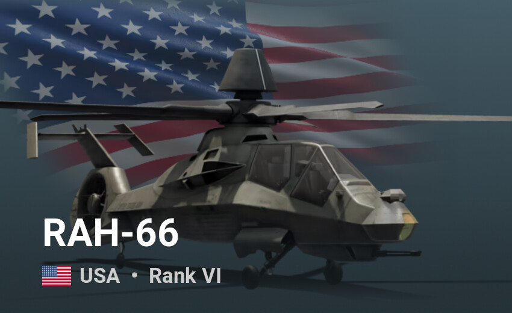

Losowe pojazdy yey

AH-1 Cobra, znany również jako Huey Cobra, Cobra, Sea Cobra, Super Cobra, Snake i Viper – śmigłowiec szturmowy zaprojektowany przez Bell Helicopter Textron. W Siłach Zbrojnych Stanów Zjednoczonych używany jest w Korpusie Piechoty Morskiej, natomiast w Wojskach Lądowych Stanów Zjednoczonych został całkowicie wyparty przez Boeing AH-64 Apache. W czerwcu 1967 roku dostarczono pierwsze egzemplarze AH-1G Cobra. Zmieniono w nim podwozie na stałe, szkło pancerne w owiewkach kokpitu zastąpiono szkłem akrylowym (pleksiglas) oraz wprowadzono nieco zmian w konstrukcji wirnika. Pierwszy raz śmigłowce te zostały użyte w akcji podczas wojny wietnamskiej 4 września 1967 roku, topiąc łódź wietnamską. Służyły między innymi podczas ofensywy Tết i były używane aż do samego końca wojny w 1973 roku, zadając duże straty siłom Wietkongu i armii Wietnamu Północnego. Głównym zagrożeniem dla nich były wielkokalibrowe karabiny maszynowe DSzK. Największe straty AH-1 poniosły w 1969 i 1970 roku – po 78 i w 1971 – 68, a ogółem utracono ich podczas wojny ze wszystkich przyczyn 279.
Bell UH-1 Iroquois – wielozadaniowy amerykański śmigłowiec. Popularnie znany jako „Huey”. Skonstruowany przez biuro Bell Helicopter Textron. Prace nad śmigłowcem rozpoczęto w 1955 roku (był to rok zaakceptowania przez armię amerykańską nowego modelu – 204). Pierwszego oblotu prototypu o nazwie XH-40 dokonano 22 października 1956. Po udanym locie zbudowano kilka maszyn serii próbnej, nazwanej później YH-40. Po serii badań i testów śmigłowiec został przyjęty na wyposażenie armii USA. Śmigłowce pierwszej serii – wersja UH-1A (model 204) miały silnik o mocy 860 KM i mieściły 6 pasażerów. Do jednostek US Army maszyny te trafiały od 30 czerwca 1959 do marca 1961.
UH-60 Black Hawk – średni wielozadaniowy amerykański śmigłowiec transportowy i wsparcia piechoty zbudowany przez Sikorsky Aircraft Corporation. Maszyna jest napędzana dwoma turbowałowymi silnikami poruszającymi jeden wirnik nośny. UH-60 był maszyną, która została wytypowana jako zwycięzca konkursu ogłoszonego przez Armię Stanów Zjednoczonych na początku lat 70 XX wieku na następcę śmigłowca Bell UH-1 Huey. Do ostatecznego przetargu dopuszczono dwie maszyny: YUH-60A, oznaczonego nazwą fabryczną S-70 i Boeing Vertol YUH-61, konkurencyjną maszynę, która przegrała z konstrukcją wytwórni Sikorsky. Na bazie UH-60 powstała wersja morska śmigłowca dla US Navy Sikorsky SH-60 Seahawk, ogółem wyprodukowano ponad 4000 maszyn rodziny S-70 i H-60.
AH-64 Apache (Apache od rdzennej ludności Ameryki) – podstawowy typ śmigłowca szturmowego United States Army, przeznaczony do zwalczania broni pancernej i wspierania oddziałów lądowych. Został opracowany przez Hughes Helicopters, przejęty następnie przez McDonnell Douglas. Zakłady te zostały później wykupione przez firmę Boeing Company. Jego poprzednikiem był Bell AH-1 Cobra.
Honorable mention:
RAH-66 Comanche – amerykański śmigłowiec szturmowo-rozpoznawczy zaprojektowany w kooperacji przez wytwórnie Boeing i Sikorsky Aircraft Corporation, jako następca maszyn poprzedniej generacji AH-1 Cobra, OH-58 Kiowa i Hughes OH-6A Cayuse oraz uzupełnienie AH-64 Apache. RAH-66 Comanche został zbudowany w technologii stealth i był jednym z najnowocześniejszych śmigłowców bojowych świata, do momentu zamknięcia programu rozwojowego 23 lutego 2004 roku. Program pochłonął 48,1 mld USD.